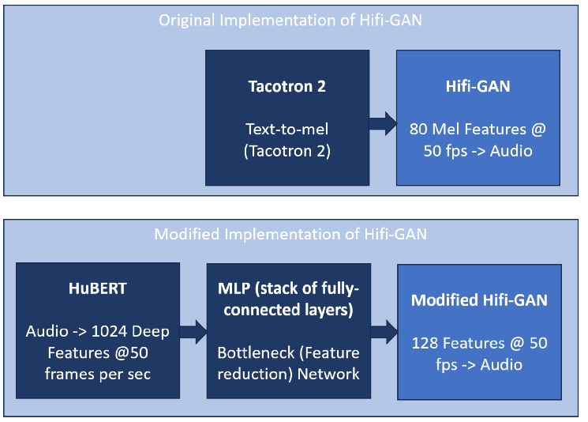
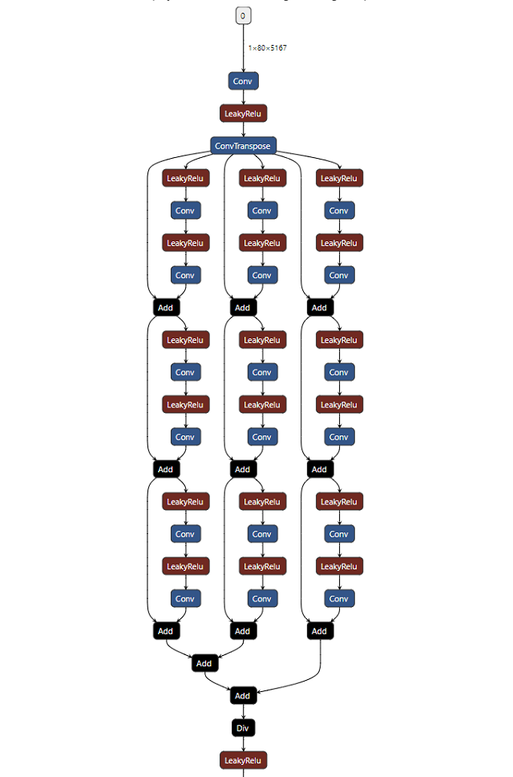

Experiments to train the demucs denoiser network to improve it as an input to the transformer autoencoder have been unsuccessful so far. The experiments are tending to overamplify and introduce artifacts into the denoised outputs, which is hindering the autoencoder outputs.
A couple of experiments using combinations of losses that are showing a very slow loss descent have been left running in the background. The latest checkpoint outputs from these are increasing in 'speech-like' sounds from previous epochs, but are still unintelligible.
Previously, we've done minimal modifications to the architectures of the encoder and decoder networks.
We've done just enough to repurpose the decoder (which was designed as a mel-to-audio converter) to handle transformer features rather than mel-spectrograms:

To make the pipeline work for realtime streaming we're digging deeper into the network architectures and making more significant changes:
Each convolution and addition in the network requires a causal buffer of historical input. Before summing or passing to downstream layers, the introduced delay needs to be accounted for.
With the current architecture, this leads to a total latency of about 50 ms.

The conversion to realtime streaming is still in progress. Here is some Audio output from the partially converted network with a frame (audio buffer) size of 1024 samples:
| Frame Size 1024, Non-causal (unmodified network) |
Frame Size 1024, Causal (modified network) |
|---|---|